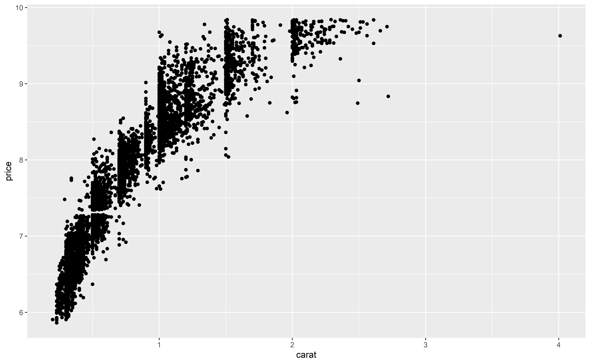
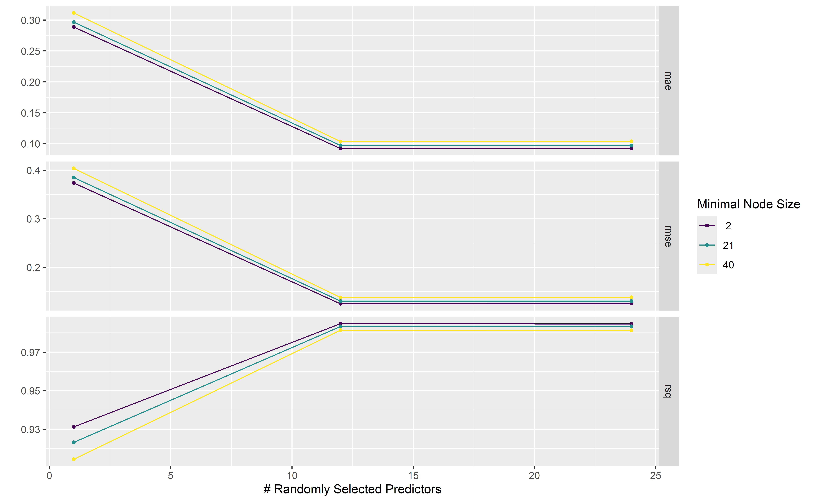
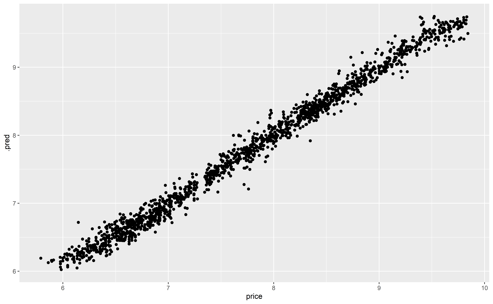

library(tidyverse)
library(tidymodels)
library(GGally)
library(doParallel)Semaine3 - Machine leanring - Suite
Introduction
L’objectif de cette semaine est de continuer à explorer les bases du machine learning en R à travers les possibilités offertes par tidyverse.
Nous allons notamment parler de:
- Resampling
- Optimisation d’hyperparamètres
- Autres fonctionnalités utiles (PCA, GGally, …)
Nous aurons besoin de plusieurs package pour cette semaine:
Resampling
Données
Nous allons commencer par reprendre les données de la semaine passée. Nous pouvons simplement les charger de la manière suivante:
data(ames, package = "modeldata")Modèle simple
La semaine passée, nous avons vu comment entraîner un modèle sur des données d’entrainement et comment tester le modèle sur des données de test.
Séparation du modèle:
set.seed(42)
splits <- initial_split(ames, prop = .75)
ames_train <- training(splits)
ames_test <- testing(splits)Réglage et entrainement du modèle :
rf_model <-
rand_forest(trees = 1000) %>%
set_engine("ranger") %>%
set_mode("regression")
rf_wflow <-
workflow() %>%
add_formula(
Sale_Price ~ Neighborhood + Gr_Liv_Area + Year_Built + Bldg_Type +
Latitude + Longitude) %>%
add_model(rf_model)
rf_fit <- rf_wflow %>% fit(data = ames_train)Prédiction et évaluation du modèle:
rf_pred <- rf_fit %>%
predict(new_data = ames_test) %>%
bind_cols(ames_test %>% select(Sale_Price))
rf_metrics <- metric_set(rmse, rsq, mae)
rf_pred %>%
rf_metrics(truth = Sale_Price, estimate = .pred)# A tibble: 3 × 3
.metric .estimator .estimate
<chr> <chr> <dbl>
1 rmse standard 29600.
2 rsq standard 0.864
3 mae standard 19657. En général, la régle veut qu’on ne touche pas aux données de test avant l’entrainement final. Maintenant, si nous voulons estimer les performances de notre modèle avant de le faire sur les données de test, il n’est pas rare d’estimer les performances à partir des données d’entrainement. Si nous essayons de mesurer les perfomances à partir des données d’entrainement, nous voyons que nos performances estimées sont supérieures à celles obtenues sur les données de test.
rf_pred_fit <- rf_fit %>%
predict(new_data = ames_train) %>%
bind_cols(ames_train %>% select(Sale_Price))
rf_metrics <- metric_set(rmse, rsq, mae)
rf_pred_fit %>%
rf_metrics(truth = Sale_Price, estimate = .pred)# A tibble: 3 × 3
.metric .estimator .estimate
<chr> <chr> <dbl>
1 rmse standard 15825.
2 rsq standard 0.965
3 mae standard 10332. C’est ce qu’on appelle de l’overfitting. Le modèle est très bon pour prédire les données qu’il a vu (d’entrainement) mais n’est pas très bon pour généraliser (moins bon en tout cas).
Pour éviter cela, nous allons faire du resampling ou rééchantillonnage en français. L’idée est de découper le set d’entrainement en plusieurs versions et d’entrainement le modèle sur chaque version. De cette manière, à l’entrainement, le modèle ne voit pas une seule version des données et il sera donc possible d’évaluer directement ses capacités à généraliser.
Il existe plusieurs manières de faire du resampling.
Cross-Validation
Une manière bien connue de faire du resampling est la cross-validation, et notamment la V-fold cross-validation. Les données séparées en V groupes (les folds). Le modèle sera ensuite entraîné V fois, en mettant de côté à chaque fois un des groupes.
Nous pouvons ainsi simplement créer les folds:
ames_folds <- vfold_cv(ames_train, v = 10)
ames_folds# 10-fold cross-validation
# A tibble: 10 × 2
splits id
<list> <chr>
1 <split [1977/220]> Fold01
2 <split [1977/220]> Fold02
3 <split [1977/220]> Fold03
4 <split [1977/220]> Fold04
5 <split [1977/220]> Fold05
6 <split [1977/220]> Fold06
7 <split [1977/220]> Fold07
8 <split [1978/219]> Fold08
9 <split [1978/219]> Fold09
10 <split [1978/219]> Fold10Validation set
Dans les cas où nous avons beaucoup d’échantillons, nous pouvons directement créer 3 jeux de données: un jeu d’entraînement, un jeu de validation et un jeu de test final. Dans ce cas, la séparation est faite directement avec la fonction initial_validation_split au lieu de initial_split.
ames_val_split <- initial_validation_split(ames, prop = c(0.6, 0.2))
ames_val_split<Training/Validation/Testing/Total>
<1758/586/586/2930>ames_val_train <- training(ames_val_split)
ames_val_validation <- validation_set(ames_val_split)
ames_val_test <- testing(ames_val_split)Bootstraping
Une autre méthode connue est le Bootstrapping, qui fonctionne un peu comme la cross-validation, sans réduire le nombre d’échantillons pour l’entraînement. Pour cela, à chaque itération, des échantillons sont mis de côté pour estimer les performances du modèle mais des échantillons sont tirés aléatoirement parmis les restant, avec remise, pour conserver la même taille de jeu d’entraînement. Cette méthode est particulièrement utile si le jeu de données est faible.
bootstraps(ames_train, times = 5)# Bootstrap sampling
# A tibble: 5 × 2
splits id
<list> <chr>
1 <split [2197/825]> Bootstrap1
2 <split [2197/810]> Bootstrap2
3 <split [2197/823]> Bootstrap3
4 <split [2197/802]> Bootstrap4
5 <split [2197/801]> Bootstrap5Estimation des performances
Pour estimer les perfomances du modèle, il faudra faire un fit pour chaque rééchantillonnage.
Pour cela, il faut utiliser la fonction fit_resamples à la place de la fonction fit.
# Avec une v-fold cross-validation
ames_folds <- vfold_cv(ames_train, v = 10)
rf_fit_resample <- rf_wflow %>%
fit_resamples(resamples = ames_folds)
rf_fit_resample# Resampling results
# 10-fold cross-validation
# A tibble: 10 × 4
splits id .metrics .notes
<list> <chr> <list> <list>
1 <split [1977/220]> Fold01 <tibble [2 × 4]> <tibble [0 × 4]>
2 <split [1977/220]> Fold02 <tibble [2 × 4]> <tibble [0 × 4]>
3 <split [1977/220]> Fold03 <tibble [2 × 4]> <tibble [0 × 4]>
4 <split [1977/220]> Fold04 <tibble [2 × 4]> <tibble [0 × 4]>
5 <split [1977/220]> Fold05 <tibble [2 × 4]> <tibble [0 × 4]>
6 <split [1977/220]> Fold06 <tibble [2 × 4]> <tibble [0 × 4]>
7 <split [1977/220]> Fold07 <tibble [2 × 4]> <tibble [0 × 4]>
8 <split [1978/219]> Fold08 <tibble [2 × 4]> <tibble [0 × 4]>
9 <split [1978/219]> Fold09 <tibble [2 × 4]> <tibble [0 × 4]>
10 <split [1978/219]> Fold10 <tibble [2 × 4]> <tibble [0 × 4]>Dans le résultat, on retrouve un tableau donc chaque ligne correspond à un des folds. Les valeurs pour .metrics sont des elles-mêmes des tableaux contenant les métriques obtenues pour chaque entrainement. Comme vous le voyez, par défaut, les prédictions ne sont pas toutes retournées. Pour les obtenir, il faut l’indiquer:
rf_fit_resample <- rf_wflow %>%
fit_resamples(resamples = ames_folds,
control = control_resamples(save_pred = TRUE))
rf_fit_resample# Resampling results
# 10-fold cross-validation
# A tibble: 10 × 5
splits id .metrics .notes .predictions
<list> <chr> <list> <list> <list>
1 <split [1977/220]> Fold01 <tibble [2 × 4]> <tibble [0 × 4]> <tibble>
2 <split [1977/220]> Fold02 <tibble [2 × 4]> <tibble [0 × 4]> <tibble>
3 <split [1977/220]> Fold03 <tibble [2 × 4]> <tibble [0 × 4]> <tibble>
4 <split [1977/220]> Fold04 <tibble [2 × 4]> <tibble [0 × 4]> <tibble>
5 <split [1977/220]> Fold05 <tibble [2 × 4]> <tibble [0 × 4]> <tibble>
6 <split [1977/220]> Fold06 <tibble [2 × 4]> <tibble [0 × 4]> <tibble>
7 <split [1977/220]> Fold07 <tibble [2 × 4]> <tibble [0 × 4]> <tibble>
8 <split [1978/219]> Fold08 <tibble [2 × 4]> <tibble [0 × 4]> <tibble>
9 <split [1978/219]> Fold09 <tibble [2 × 4]> <tibble [0 × 4]> <tibble>
10 <split [1978/219]> Fold10 <tibble [2 × 4]> <tibble [0 × 4]> <tibble> Pour obtenir les estimations des performances:
# Pour avoir une moyenne sur les folds
collect_metrics(rf_fit_resample)# A tibble: 2 × 6
.metric .estimator mean n std_err .config
<chr> <chr> <dbl> <int> <dbl> <chr>
1 rmse standard 31639. 10 762. pre0_mod0_post0
2 rsq standard 0.843 10 0.00697 pre0_mod0_post0# Pour avoir toutes les valeurs
collect_metrics(rf_fit_resample, summarize = FALSE)# A tibble: 20 × 5
id .metric .estimator .estimate .config
<chr> <chr> <chr> <dbl> <chr>
1 Fold01 rmse standard 30557. pre0_mod0_post0
2 Fold01 rsq standard 0.850 pre0_mod0_post0
3 Fold02 rmse standard 30022. pre0_mod0_post0
4 Fold02 rsq standard 0.860 pre0_mod0_post0
5 Fold03 rmse standard 33529. pre0_mod0_post0
6 Fold03 rsq standard 0.857 pre0_mod0_post0
7 Fold04 rmse standard 31169. pre0_mod0_post0
8 Fold04 rsq standard 0.794 pre0_mod0_post0
9 Fold05 rmse standard 35300. pre0_mod0_post0
10 Fold05 rsq standard 0.850 pre0_mod0_post0
11 Fold06 rmse standard 28265. pre0_mod0_post0
12 Fold06 rsq standard 0.813 pre0_mod0_post0
13 Fold07 rmse standard 34138. pre0_mod0_post0
14 Fold07 rsq standard 0.845 pre0_mod0_post0
15 Fold08 rmse standard 30089. pre0_mod0_post0
16 Fold08 rsq standard 0.859 pre0_mod0_post0
17 Fold09 rmse standard 29295. pre0_mod0_post0
18 Fold09 rsq standard 0.849 pre0_mod0_post0
19 Fold10 rmse standard 34023. pre0_mod0_post0
20 Fold10 rsq standard 0.858 pre0_mod0_post0Pour obtenir les prédictions moyennes:
rf_pred_resample <- collect_predictions(rf_fit_resample, summarize = TRUE)
rf_pred_resample# A tibble: 2,197 × 4
.pred Sale_Price .row .config
<dbl> <int> <int> <chr>
1 89207. 13100 1769 pre0_mod0_post0
2 73645. 34900 43 pre0_mod0_post0
3 82985. 35000 1680 pre0_mod0_post0
4 63806. 35311 1513 pre0_mod0_post0
5 76095. 39300 1416 pre0_mod0_post0
6 99736. 40000 1840 pre0_mod0_post0
7 69006. 46500 1399 pre0_mod0_post0
8 85804. 50138 1279 pre0_mod0_post0
9 64203. 51689 709 pre0_mod0_post0
10 81328. 52000 2047 pre0_mod0_post0
# ℹ 2,187 more rowsFaites attention qu’à cette étape, il s’agit des prédictions sur les données d’entraînement !
Pour plus d’informations sur le resampling, vous pouvez lire ce chapitre (Kuhn and Silge, 2022).
Optimisation des hyperparamètres
Pour de nombreux modèles, il est possible d’optimiser certains hyperparamètres.
Les paramètres à optimiser dépendront du modèle choisi. Dans cette exemple, nous allons chercher à prédire le prix de diamants à partir de différentes variables.
Préparation des données
Les données peuvent être chargées directement à partir de R
data("diamonds")
dim(diamonds)[1] 53940 10Nous voyons qu’il y a beaucoup de données. Pour accélerer les calculs dans cet exemple, nous allons prendre seulement 10% du jeu de données, et le séparer en ensemble d’entrainement (70%) et de test (30%). Nous allons faire un rééchantillonnage en V-folds cross-validation. Nous allons créer 3 folds, valeur en générale non recommandée mais que nous allons choisir pour éviter de complexfier les calculs ici.
diamond_split <- initial_split(diamonds %>% sample_frac(.1), prop = .7, strata = price)
diamond_train <- training(diamond_split)
diamond_test <- testing(diamond_split)
diamond_folds <- vfold_cv(diamond_train, v = 3) # habituellement v=10Préprocessing
Nous allons prédire le price en fonction des autres variables. En regardant l’étendue, nous pouvons voir qu’il pourrait être intéressant d’appliquer le log() sur cette colonne.
diamonds %>%
reframe(price_quantile = quantile(price)) # summarise()# A tibble: 5 × 1
price_quantile
<dbl>
1 326
2 950
3 2401
4 5324.
5 18823 On peut également voir que la relation entre le log(price) et le carat n’est pas linéaire.
diamonds %>%
sample_frac(.1) %>%
mutate(price=log(price)) %>%
ggplot(aes(x=carat, y=price)) +
geom_point()
Dans les prétraitements, nous pouvons donc effectuer les step_ suivantes:
rf_recipe <- recipe(price ~ ., data = diamond_train) %>%
step_log(price) %>%
step_normalize(all_numeric_predictors()) %>%
step_dummy(all_nominal_predictors()) %>%
step_poly(carat, degree = 2)Modèle et choix des paramètres
Pour le modèle, nous allons faire de la regression avec Random Forest. Cette fois, nous allons laisser les paramètres mtry et min_n de côté pour l’instant pour les estimer à partir des données.
rf_model <- rand_forest(mtry = tune(), trees = 1000, min_n = tune()) %>%
set_mode("regression") %>%
set_engine("ranger")Nous pouvons voir l’état de nos paramètres et le range de valeurs par défaut.
rf_param <- extract_parameter_set_dials(rf_model)
rf_paramCollection of 2 parameters for tuning identifier type object
mtry mtry nparam[?]
min_n min_n nparam[+]Model parameters needing finalization:# Randomly Selected Predictors ('mtry')See `?dials::finalize()` or `?dials::update.parameters()` for more information.rf_param %>% extract_parameter_dials("mtry")# Randomly Selected Predictors (quantitative)Range: [1, ?]Ici, nous voyons que le paramètre mtry n’est pas encore initialisé avec un range de valeurs possibles. C’est normal car ce paramètre se base sur le nombre de colonnes à disposition. Nous pouvons le mettre à jour avec la fonction finalize() en lui passant les données preprocessées. Pour cela, nous pouvons appliquer prep() (l’équivalent de fit mais pour les recettes) et juice pour obtenir les données après prétraitement.
diamond_train_juiced <- rf_recipe %>% prep(diamond_train) %>% juice()
rf_param_updated <- rf_model %>%
extract_parameter_set_dials() %>%
finalize(diamond_train_juiced %>% select(-price))
rf_param_updated %>% extract_parameter_dials("mtry")# Randomly Selected Predictors (quantitative)Range: [1, 24]Nous voyons que le paramètre mtry est maintenant initialisé.
Tuning des paramètres et Grid_search
Nous pouvons créer une grille de recherche sur nos paramètres à partir de la fonction grid_regular. Ici level indique le nombre de valeurs que nous allons tester par paramtres. Par exemple, avec level=3, nous aurons 3 valeurs possibles pour mtry et 3 pour min_n.
rf_grid <- rf_param_updated %>%
grid_regular(levels = 3)
rf_grid# A tibble: 9 × 2
mtry min_n
<int> <int>
1 1 2
2 12 2
3 24 2
4 1 21
5 12 21
6 24 21
7 1 40
8 12 40
9 24 40Nous pouvons ensuite créer notre workflow comme d’habitude.
rf_wf <- workflow() %>%
add_model(rf_model) %>%
add_recipe(rf_recipe)En revanche, au lieu de fit ou de fit_resample, nous allons tune_grid en lui précisant qu’il doit travailler avec les données rééchantillonnées. Pour chaque rééchantillonnage, il va donc tester toutes les combinaisons de paramètres possible. Cela peut conduire à des longs temps de calculs (c’est pourquoi nous avons réduit le nombre de folds, de données et de levels).
L’objectif ici est de trouver la meilleure combinaison de paramètres possible. Nous devons donc également indiquer des métriques pour estimer la performance.
La ligne doParallel::registerDoParallel() permet de faire travailler R en parallèle sur plusieurs threads.
doParallel::registerDoParallel()
rf_tune <- rf_wf %>%
tune_grid(diamond_folds,
grid = rf_grid,
metrics = metric_set(rmse, rsq, mae))Une fois la recherche terminée, nous pouvons voir les résultats obtenus avec autoplot.
rf_tune %>% autoplot() +
scale_color_viridis_d()
Plusieurs fonctions sont à disposition pour accéder aux résultats.
rf_tune %>% collect_metrics()# A tibble: 27 × 8
mtry min_n .metric .estimator mean n std_err .config
<int> <int> <chr> <chr> <dbl> <int> <dbl> <chr>
1 1 2 mae standard 0.292 3 0.00935 pre0_mod1_post0
2 1 2 rmse standard 0.377 3 0.0115 pre0_mod1_post0
3 1 2 rsq standard 0.935 3 0.00244 pre0_mod1_post0
4 1 21 mae standard 0.309 3 0.0125 pre0_mod2_post0
5 1 21 rmse standard 0.401 3 0.0146 pre0_mod2_post0
6 1 21 rsq standard 0.925 3 0.00335 pre0_mod2_post0
7 1 40 mae standard 0.324 3 0.00909 pre0_mod3_post0
8 1 40 rmse standard 0.420 3 0.0105 pre0_mod3_post0
9 1 40 rsq standard 0.917 3 0.00415 pre0_mod3_post0
10 12 2 mae standard 0.0910 3 0.000759 pre0_mod4_post0
# ℹ 17 more rowsrf_tune %>% show_best()Warning in show_best(.): No value of `metric` was given; "rmse" will be used.# A tibble: 5 × 8
mtry min_n .metric .estimator mean n std_err .config
<int> <int> <chr> <chr> <dbl> <int> <dbl> <chr>
1 12 2 rmse standard 0.126 3 0.00613 pre0_mod4_post0
2 24 2 rmse standard 0.128 3 0.00902 pre0_mod7_post0
3 12 21 rmse standard 0.132 3 0.00542 pre0_mod5_post0
4 24 21 rmse standard 0.133 3 0.00829 pre0_mod8_post0
5 12 40 rmse standard 0.139 3 0.00506 pre0_mod6_post0rf_tune %>% show_best(metric = "rsq")# A tibble: 5 × 8
mtry min_n .metric .estimator mean n std_err .config
<int> <int> <chr> <chr> <dbl> <int> <dbl> <chr>
1 12 2 rsq standard 0.985 3 0.00108 pre0_mod4_post0
2 24 2 rsq standard 0.985 3 0.00177 pre0_mod7_post0
3 12 21 rsq standard 0.984 3 0.000920 pre0_mod5_post0
4 24 21 rsq standard 0.984 3 0.00161 pre0_mod8_post0
5 12 40 rsq standard 0.982 3 0.000863 pre0_mod6_post0Modèle final
La meilleure combinaison peut être extraite automatiquement selon certains critères avec l’ensemble de fonction select_*. Ici, nous prenons la meilleure combinaison de paramptres selon la métrique \(R^2\). La fonction finalize_workflow() permet ensuite de créer le workflow final avec les paramètres sélectionnés.
rf_best <- rf_tune %>% select_best(metric = "rsq")
rf_final <- rf_wf %>% finalize_workflow(rf_best)
rf_final══ Workflow ════════════════════════════════════════════════════════════════════
Preprocessor: Recipe
Model: rand_forest()
── Preprocessor ────────────────────────────────────────────────────────────────
4 Recipe Steps
• step_log()
• step_normalize()
• step_dummy()
• step_poly()
── Model ───────────────────────────────────────────────────────────────────────
Random Forest Model Specification (regression)
Main Arguments:
mtry = 12
trees = 1000
min_n = 2
Computational engine: ranger La fonction last_fit() permet d’entrainer une dernière fois le modèle sur les données d’entrainement et de tester les perfomances sur les données de test.
final_pred <- rf_final %>% last_fit(diamond_split)Nous pouvons finalement voir nos performances finales !
final_pred %>% collect_metrics()# A tibble: 2 × 4
.metric .estimator .estimate .config
<chr> <chr> <dbl> <chr>
1 rmse standard 0.114 pre0_mod0_post0
2 rsq standard 0.987 pre0_mod0_post0final_pred %>%
collect_predictions() %>%
ggplot(aes(x=price, y=.pred)) +
geom_point()
Pour plus d’informations sur le tuning d’hyperparamètres, vous pouvez lire les chapitre 12 et 13 (Kuhn and Silge, 2022).
PCA
En science forensique, nous faisons souvent des PCA. Dans tidymodels, les PCA ne sont pas des modèles de machine learning mais un étape de preprocessing, accessible via step_pca.
Pour illustrer, nous allons utiliser le jeu de données iris.
data("iris")
iris %>% glimpse()Rows: 150
Columns: 5
$ Sepal.Length <dbl> 5.1, 4.9, 4.7, 4.6, 5.0, 5.4, 4.6, 5.0, 4.4, 4.9, 5.4, 4.…
$ Sepal.Width <dbl> 3.5, 3.0, 3.2, 3.1, 3.6, 3.9, 3.4, 3.4, 2.9, 3.1, 3.7, 3.…
$ Petal.Length <dbl> 1.4, 1.4, 1.3, 1.5, 1.4, 1.7, 1.4, 1.5, 1.4, 1.5, 1.5, 1.…
$ Petal.Width <dbl> 0.2, 0.2, 0.2, 0.2, 0.2, 0.4, 0.3, 0.2, 0.2, 0.1, 0.2, 0.…
$ Species <fct> setosa, setosa, setosa, setosa, setosa, setosa, setosa, s…La PCA peut être faite dans une recette:
iris_pca_recipe <- recipe(Species ~ ., data = iris) %>%
step_normalize(all_numeric_predictors()) %>%
step_pca(all_predictors()) # tous numérique
iris_pca_recipe── Recipe ──────────────────────────────────────────────────────────────────────── Inputs Number of variables by roleoutcome: 1
predictor: 4── Operations • Centering and scaling for: all_numeric_predictors()• PCA extraction with: all_predictors()Il est important de prep la recette pour que la pca soit effectivement faite.
iris_pca <- iris_pca_recipe %>% prep()Nous pouvons obtenir le tableau de données avec les valeurs pour les différentes composantes avec juice().
iris_pca_data <- iris_pca %>% juice()
iris_pca_data# A tibble: 150 × 5
Species PC1 PC2 PC3 PC4
<fct> <dbl> <dbl> <dbl> <dbl>
1 setosa -2.26 -0.478 0.127 0.0241
2 setosa -2.07 0.672 0.234 0.103
3 setosa -2.36 0.341 -0.0441 0.0283
4 setosa -2.29 0.595 -0.0910 -0.0657
5 setosa -2.38 -0.645 -0.0157 -0.0358
6 setosa -2.07 -1.48 -0.0269 0.00659
7 setosa -2.44 -0.0475 -0.334 -0.0367
8 setosa -2.23 -0.222 0.0884 -0.0245
9 setosa -2.33 1.11 -0.145 -0.0268
10 setosa -2.18 0.467 0.253 -0.0398
# ℹ 140 more rowsLa fonction ggpairs du package GGally permet de voir rapidement les différentes relations entre les composantes
ggpairs(iris_pca_data, columns = 2:5, aes(colour = Species))Nous pouvons également faire un scatter plot en fonction de deux composantes souhaitées:
iris_pca_data %>% ggplot(aes(x=PC1, y=PC2, colour = Species)) +
geom_point()Avec la fonction tidy() nous pouvons obtenir les mêmes informations sous forme “longue” (tidy).
iris_pca %>% tidy()# A tibble: 2 × 6
number operation type trained skip id
<int> <chr> <chr> <lgl> <lgl> <chr>
1 1 step normalize TRUE FALSE normalize_LsqMi
2 2 step pca TRUE FALSE pca_7fbxI iris_pca_tidy <- iris_pca %>% tidy(2) # 2 car 2e preprocessing
iris_pca_tidy# A tibble: 16 × 4
terms value component id
<chr> <dbl> <chr> <chr>
1 Sepal.Length 0.521 PC1 pca_7fbxI
2 Sepal.Width -0.269 PC1 pca_7fbxI
3 Petal.Length 0.580 PC1 pca_7fbxI
4 Petal.Width 0.565 PC1 pca_7fbxI
5 Sepal.Length -0.377 PC2 pca_7fbxI
6 Sepal.Width -0.923 PC2 pca_7fbxI
7 Petal.Length -0.0245 PC2 pca_7fbxI
8 Petal.Width -0.0669 PC2 pca_7fbxI
9 Sepal.Length 0.720 PC3 pca_7fbxI
10 Sepal.Width -0.244 PC3 pca_7fbxI
11 Petal.Length -0.142 PC3 pca_7fbxI
12 Petal.Width -0.634 PC3 pca_7fbxI
13 Sepal.Length 0.261 PC4 pca_7fbxI
14 Sepal.Width -0.124 PC4 pca_7fbxI
15 Petal.Length -0.801 PC4 pca_7fbxI
16 Petal.Width 0.524 PC4 pca_7fbxICela permet de voir l’influence des différentes variables dans chaque composante.
tmp <- iris_pca_tidy %>%
mutate(
positive = value > 0,
abs_value = abs(value))%>%
group_by(component) %>%
slice_max(abs_value, n = 8) %>%
ungroup() %>%
arrange(component, abs_value) %>%
mutate(order = row_number())
tmp %>% ggplot(aes(x = order, y = abs_value, fill = positive)) +
geom_col() +
coord_flip() +
facet_wrap( vars(component), scales = "free_y") +
scale_x_continuous(
breaks = tmp$order,
labels = tmp$terms,
expand = c(0,0)
) +
labs(x = NULL, y = "Absolute value of contribution", fill="Prositive ?")Nous pouvons également voir la variance expliquée pour chaque composante…
pca_variances <- tidy(iris_pca, 2, type = "variance")
pca_variances# A tibble: 16 × 4
terms value component id
<chr> <dbl> <int> <chr>
1 variance 2.92 1 pca_7fbxI
2 variance 0.914 2 pca_7fbxI
3 variance 0.147 3 pca_7fbxI
4 variance 0.0207 4 pca_7fbxI
5 cumulative variance 2.92 1 pca_7fbxI
6 cumulative variance 3.83 2 pca_7fbxI
7 cumulative variance 3.98 3 pca_7fbxI
8 cumulative variance 4 4 pca_7fbxI
9 percent variance 73.0 1 pca_7fbxI
10 percent variance 22.9 2 pca_7fbxI
11 percent variance 3.67 3 pca_7fbxI
12 percent variance 0.518 4 pca_7fbxI
13 cumulative percent variance 73.0 1 pca_7fbxI
14 cumulative percent variance 95.8 2 pca_7fbxI
15 cumulative percent variance 99.5 3 pca_7fbxI
16 cumulative percent variance 100 4 pca_7fbxIEt les visualiser !
pca_variances %>%
filter(terms == "percent variance") %>%
ggplot(aes(component, value)) +
geom_col() +
labs(x = "Principal Components", y = "Variance explained (%)") +
theme_minimal()pca_variances %>%
filter(terms == "cumulative percent variance") %>%
ggplot(aes(component, value)) +
geom_col() +
labs(x = "Principal Components", y = "Cumulative variance explained (%)") +
theme_minimal()References
Kuhn, M. and Silge, J. (2022). Tidy modeling with R: A framework for modeling in the tidyverse. O’Reilly Media.